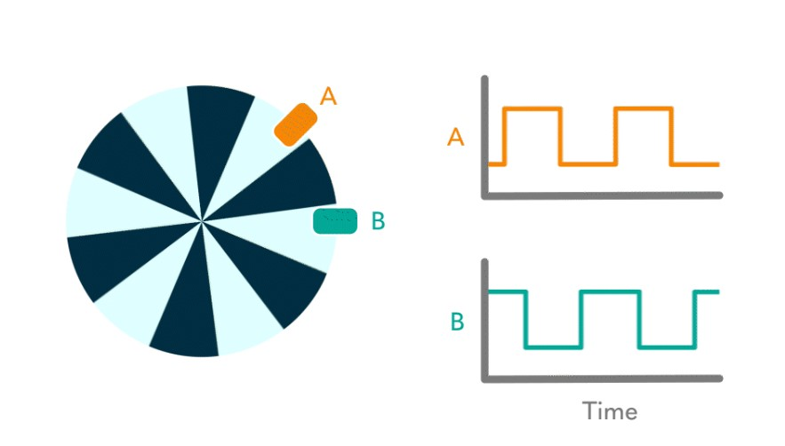
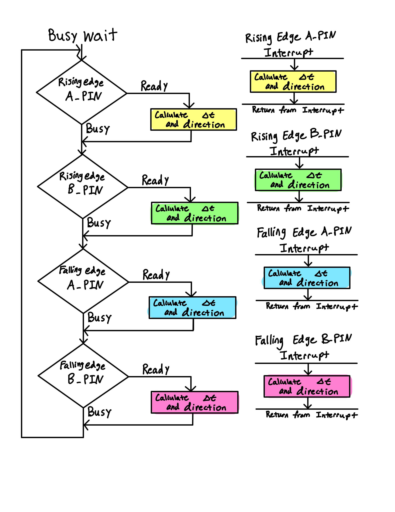
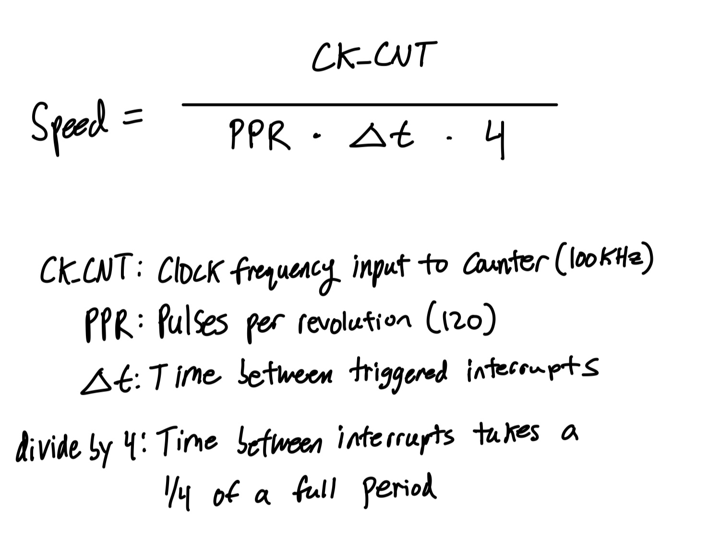
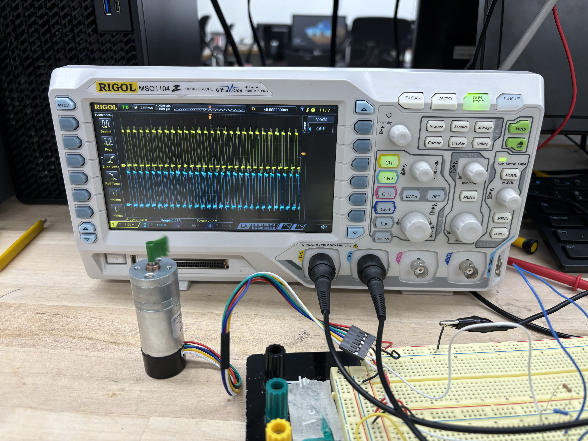
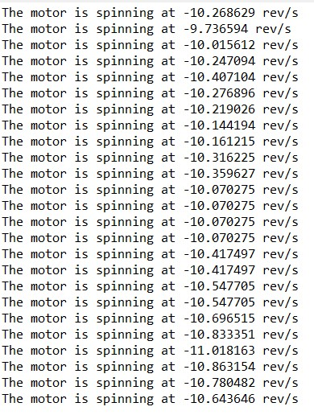

Summary
This was another bare metal programming MCU lab where students were required to configure interrupts on quadrature encoder pulses to calculate both direction and rev/s. A quadrature encoder is a device that can measure direction and speed of an object by producing two out of phase signals. It works by detecting changes in the state of these signals as the object moves, allowing for precise tracking of rotational motion. During my testing, I encountered weird motor behavior where the outputs from the two signals in the encoder produced inconsistent waveforms which was reflected in my rev/s calculations. This lab took around 15 hours and meets proficiency.
Design
The first thing to do was to understand what a quadrature encoder was. It is essentially an a spinning disk with two fixed sensors detecting a change in state of the disk. In our case, hall effect sensors are doing this with magnets while other encoder might use IR methods. These sensors are placed 90 degrees apart from one another effectively making one signal always “lead” or lag behind the other as seen in the Lab 5 manual.
PA5, the input pin receiving the A signal, was not 5V tolerant. A voltage divider was used to divide the 4.6V input voltage down to 2.5V. The PA6 pin was 5V tolerant so the B signal was directly linked to that pin without a voltage divider.
.jpg)
Motor’s Direction
I calculated direction by using this “leading” and “lagging” behavior. I placed an interrupt on signal A’s output. When the interrupt triggered, the program would look at the current B signal output. If B was LOW, then the motor’s direction was CCW and CW if B was HIGH.
Initializing the interrupt took a number of steps:
- Enabling SYSCFG in RCC to set up the clock domain
- Configuring the EXTICR register to make input encoder signals A and B hold contain interrupts
- Enabling interrupts globally
- Masks bits corresponding to the MCU pins used
- Enable rising edge interrupt trigger in RTSR corresponding to the MCU pin used
- Disabling the falling edge interrutp trigger in FTSr corresponing to the MCU pin used
- Turn on the EXTI interrupt found in NVIC_ISER (Position Table corresponds to bit manipulated)
- Creating the IRQHandler corresponding to the EXTI interrupt used in the NVIC_ISER
Interrupt Flowchart

Motor’s Speed
To calculate the motor’s speed, I used the change in time between the two pulses’ rising and falling edges. This change in time would then be plugged into a speed equation.

Debugging
The main challenge I faced in this lab was once again a logic level issue. The voltage output on the A and B pins was sketchy and inconsistent among the motors in the lab. I didn’t realize until after many debugging hours that my HIGH logic was stepping into the forbidden zone causing interrupts to fire back to back even when there was no valid rising edge. This failure to recognize the problem led to my calculations saying that the motor was rotating consistently at 10 m/s in alternating directions every half second or so when at least one volt was applied to the motor.
The motor could not drive enough current with the resistors I was using in my voltage divider. So I increased my resistor values. This resulted in better and more consistent calculations.
Another bug I encountered was a race condition for calcualting delta_time within the interrupt handler. My mistake was using the still running timer 16 multiple times within the handler. This meant that the counter value would update as code was being executed, thus, slowing the speed calculations down dramaticaly. Setting the counter value once in the beginning of the handler was a relatively simple solution to this problem.
Interrupting vs Polling
Another popular technique to detect hardware and software events is polling. For example, one could use a while loop with an if condition checking if a signal has reached a rising edge event. However, polling can take a significant amount of time to detect events because the frequency of polling might be slower than the input signal. An interrupt has an almost immediate response to real time events. An interrupt also allows the CPU to run other parts of the program without constantly having to poll for an event. In conclusion, interrupts are faster at detecting events than polling.
Verification

The design works as intended and achieves the excellence mark. I used a working encoder this itme around and I got consistent results. A positive and negative 12V input to the motor should make the motor spin at positive and negative 10 rev/s respectively as seen below.


The design also works for low speeds too. Below is a video showing this.
This lab took me about 15 hours to comlpete and it was incredibly satisfying to get it to work!